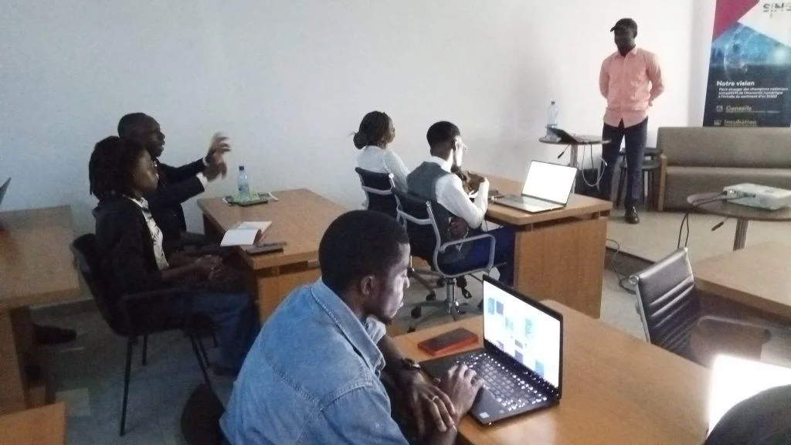
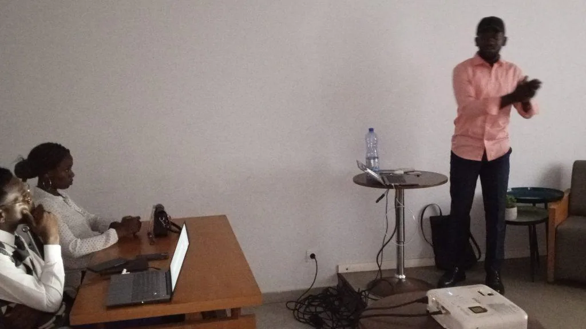

Sommaire
Le 18 et 19 juin 2026, Libreville a accueilli le Side Event VivaTech, organisé par la SING SA (Société d'Incubation Numérique du Gabon) en partenariat avec AG Partners Publicis Africa, avec le soutien d'Airtel Gabon. Deux jours pour mettre en lumière les talents qui construisent le numérique gabonais.
Alissa IA y était, non pas comme exposant, mais pour animer un atelier : comment créer et sécuriser un agent IA autonome. Nous avons choisi de le faire deux fois, avec deux approches différentes, parce que le public n'avait pas les mêmes besoins.
Un agent IA se déploie en une après-midi. Un agent IA fiable demande de penser d'abord à ce qu'il ne doit pas faire.
1. Le Side Event VivaTech Libreville
Placé sous le thème « L'Innovation en Mouvement : le rendez-vous Tech & Digital », l'événement s'inspirait du rendez-vous international VivaTech. La première journée a été consacrée à la découverte : un Vernissage Tech où dix créatifs et porteurs de projets ont présenté leurs prototypes devant le public, le jury et les acteurs de l'écosystème. Des ateliers pratiques étaient ensuite centrés sur l'intelligence artificielle — dont celui que nous animions.
La seconde journée a pris un tour plus expert, avec des keynotes sur le marketing digital à l'ère de l'IA, la réglementation des réseaux sociaux, la formation des talents locaux et l'innovation en santé. Elle s'est conclue par la finale de trois projets devant un jury d'experts.
Autre temps fort : la visite du Président de la Fédération des Entreprises du Gabon (FEG), accompagné du Vice-Président et de la Secrétaire Générale. L'occasion d'échanges directs entre le secteur privé établi et les startups présentes.
2. Premier atelier : pour les non-techniciens
Le premier atelier s'adressait à des personnes qui n'écrivent pas de code : dirigeants, entrepreneurs, porteurs de projets, étudiants, créatifs. L'objectif n'était pas de leur apprendre à programmer, mais de leur donner les moyens de comprendre et piloter un agent IA.
Nous sommes partis de zéro : qu'est-ce qu'un agent, en quoi il diffère d'un simple formulaire ou d'un répondeur automatique, ce qu'il sait faire, ce qu'il ne sait pas faire, et surtout comment on l'encadre.
- Comprendre une demande formulée librement
- Consulter des documents ou une base de données
- Déclencher une action : rendez-vous, envoi, transfert
- Garder le contexte d'une conversation
- Qu'il devine une règle métier non écrite
- Qu'il décide seul sur un sujet sensible
- Qu'il soit juste sans données à jour
- Qu'il fonctionne sans surveillance au début
Le point le plus discuté n'a pas été la technique, mais la confiance : à partir de quand accepte-t-on qu'un agent réponde au nom d'une organisation ? La réponse tient en un mot : le périmètre. Un agent utile est un agent dont on a défini précisément ce qu'il peut faire, avec quelles données, et à quel moment il doit passer la main à un humain.

3. Second atelier : pour les développeurs
Le second atelier visait un public technique : développeurs, ingénieurs, techniciens. Là, nous sommes entrés dans le concret, avec les questions que l'on se pose vraiment quand on construit un agent.
Comment structurer un prompt qui tient dans la durée ? Comment donner accès à des outils sans lui ouvrir tout le système ? Comment gérer les erreurs, les hallucinations, les demandes hors périmètre ? Comment journaliser ce qu'il fait pour pouvoir l'expliquer après coup ?
4. Sécuriser un agent autonome
« Autonome » ne veut pas dire « incontrôlé ». Une bonne partie de l'atelier a porté sur les garde-fous, et c'est ce qui a le plus intéressé les développeurs.
Trois principes que nous appliquons dans nos propres projets, notamment pour les agents IA WhatsApp déployés pour des institutions :
- Le moindre privilège. Un agent qui répond à des questions n'a pas besoin de pouvoir supprimer une donnée. On ne lui donne que ce qui sert à sa tâche.
- La validation humaine sur les actions sensibles. Un envoi de document officiel ou une modification de dossier passe par une confirmation, au moins pendant la phase de rodage.
- La traçabilité. On garde la trace des demandes, des réponses et des actions. C'est ce qui permet de détecter une dérive et de prouver ce qui s'est passé.
Un quatrième point, souvent oublié : la mise à jour des connaissances. Un agent branché sur des documents obsolètes répond avec assurance des choses fausses. La qualité de la réponse dépend de la qualité de la source.

5. Ce que nous retenons
Nous sommes arrivés avec un plan, nous sommes repartis avec des questions. C'est bon signe : c'est souvent le signe qu'un atelier a servi.
Trois choses nous ont marqués. D'abord, la demande est là : les participants étaient venus avec des cas concrets, pas avec de la curiosité vague. Ensuite, l'écart entre les deux publics est plus grand qu'on ne le pense : ce qui paraît évident à un développeur est une vraie question pour un dirigeant, et l'inverse est vrai aussi — un développeur ne se demande pas spontanément qui sera responsable si l'agent se trompe.
Enfin, la sécurité arrive trop tard dans la plupart des projets. On construit l'agent, on le met en ligne, puis on pense aux limites. C'est l'inverse qu'il faut faire, et c'est le message que nous continuerons de porter.
Un agent IA n'est pas un projet informatique. C'est un projet d'organisation : il faut décider qui il sert, ce qu'il a le droit de faire, et qui répond de ses actes.
Merci à la SING SA et à AG Partners Publicis Africa pour l'organisation, et à toutes les personnes qui ont participé aux deux sessions. Nous restons disponibles pour les organisations qui veulent passer de la démonstration à un agent réellement en production.
- VivaTech
- Agent IA
- Sécurité
- Formation
- Gabon
- Libreville
Articles similaires

· 8 min de lecture
La digitalisation grâce à l'IA : une révolution incontournable pour les entreprises africaines
L'IA n'est plus une option : automatisation, WhatsApp intelligent, secteurs transformés. Comment les entreprises africaines s'en emparent.
· 10 min de lecture
Alissa School : pourquoi l'éducation actuelle échoue, et comment l'IA peut réellement corriger le système
L'école traditionnelle peine à répondre aux besoins individuels des élèves. L'IA permet une personnalisation réelle, un suivi continu et une motivation accrue.